Flutter’ın düzen mekanizmasının nasıl çalıştığını ve uygulamanızın düzenini nasıl oluşturacağınızı öğrenin.
Flutter’ın düzen mekanizmasının çekirdeği widget’lardır. Flutter’da neredeyse her şey bir widget’tır; düzen modelleri bile widget’tır. Bir Flutter uygulamasında gördüğünüz resimler, simgeler ve metinlerin hepsi birer widget’tır. Ancak satırlar, sütunlar ve ızgaralar gibi görünür widget’ları düzenleyen, kısıtlayan ve hizalayan göremediğiniz şeyler de widget’tır. Daha karmaşık widget’lar oluşturmak için widget’ları birleştirerek bir düzen oluşturursunuz.
Aşağıdaki örnekte, ilk ekran görüntüsü etiketli üç simgeyi
görüntülerken, ikinci ekran görüntüsü satırlar ve sütunlar için görsel
düzeni içerir. İkinci ekran görüntüsünde, görsel düzeni görebilmeniz
için debugPaintSizeEnabled özelliği true
olarak ayarlanmıştır.
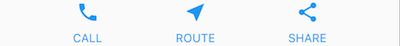
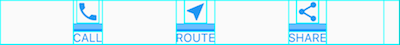
Önceki örnek için widget ağacının bir diyagramı şöyledir:
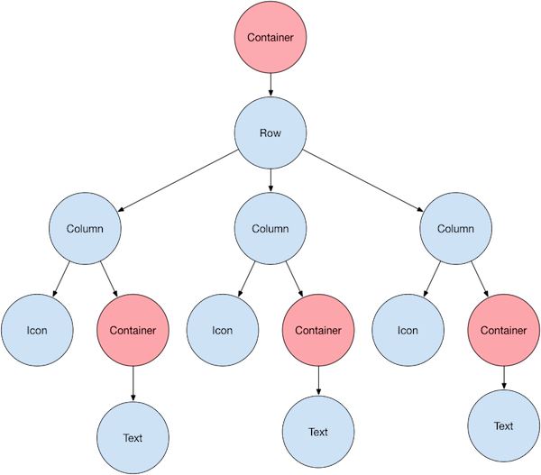
Bunun çoğu beklediğiniz gibi görünebilir, ancak kapsayıcıları (pembe
renkte gösterilen) merak ediyor olabilirsiniz. Container,
alt widget’ını özelleştirmenize olanak tanıyan bir widget sınıfıdır.
Dolgu (padding), kenar boşlukları (margins), kenarlıklar (borders) veya
arka plan rengi eklemek istediğinizde (yeteneklerinden sadece birkaçı)
bir Container kullanın.
Her Text widget’ı, kenar boşlukları eklemek için bir
Container içine yerleştirilir. Tüm Row (Satır)
da satırın etrafına dolgu eklemek için bir Container içine
yerleştirilir.
UI’ın geri kalanı özellikler (properties) tarafından kontrol edilir.
Bir Icon’un rengini color özelliğini
kullanarak ayarlayın. Yazı tipini, rengini, kalınlığını vb. ayarlamak
için Text.style özelliğini kullanın. Sütunlar ve satırlar,
çocuklarının dikey veya yatay olarak nasıl hizalanacağını ve çocukların
ne kadar alan kaplayacağını belirtmenize olanak tanıyan özelliklere
sahiptir.
Not Bu eğitimdeki ekran görüntülerinin çoğu, görsel
düzeni görebilmeniz için debugPaintSizeEnabled özelliği
true olarak ayarlanmış şekilde görüntülenir. Daha fazla
bilgi için, “Düzen sorunlarını görsel olarak hata ayıklama” konusuna
bakın.
Flutter’da tek bir widget’ı nasıl düzenlersiniz? Bu bölüm, basit bir widget’ın nasıl oluşturulacağını ve görüntüleneceğini gösterir. Ayrıca basit bir Hello World uygulaması için tüm kodu da gösterir.
Flutter’da ekrana metin, simge veya resim koymak sadece birkaç adım sürer.
Görünür bir widget’ı nasıl hizalamak veya kısıtlamak istediğinize
bağlı olarak çeşitli düzen widget’ları arasından seçim yapın, çünkü bu
özellikler genellikle içerilen widget’a aktarılır. Örneğin, görünür bir
widget’ı hem yatay hem de dikey olarak ortalamak için
Center düzen widget’ını kullanabilirsiniz:
Center(
// Content to be centered here.
)Uygulamanızın metin, resim veya
simge gibi görünür öğeler içermesi için görünür bir widget
seçin. Örneğin, bir metin görüntülemek için Text widget’ını
kullanabilirsiniz:
Text('Hello World')Tüm düzen widget’ları aşağıdakilerden birine sahiptir:
child özelliği (örneğin,
Center veya Container).children özelliği
(örneğin, Row, Column, ListView
veya Stack).Text widget’ını Center widget’ına
ekleyin:
const Center(
child: Text('Hello World'),
),Bir Flutter uygulaması kendisi de bir widget’tır ve çoğu widget’ın
bir build() yöntemi vardır. Uygulamanın
build() yönteminde bir widget’ı örneklemek ve döndürmek
widget’ı görüntüler.
Genel bir uygulama için, Container widget’ını
uygulamanın build() yöntemine ekleyebilirsiniz:
class MyApp extends StatelessWidget {
const MyApp({super.key});
@override
Widget build(BuildContext context) {
return Container(
decoration: const BoxDecoration(color: Colors.white),
child: const Center(
child: Text(
'Hello World',
textDirection: TextDirection.ltr,
style: TextStyle(fontSize: 32, color: Colors.black87),
),
),
);
}
}Varsayılan olarak, genel bir uygulama bir AppBar, başlık
veya arka plan rengi içermez. Genel bir uygulamada bu özellikleri
istiyorsanız, bunları kendiniz oluşturmalısınız. Bu uygulama, bir
Material uygulamasını taklit etmek için arka plan rengini beyaza ve
metni koyu griye değiştirir.
Widget’larınızı ekledikten sonra uygulamanızı çalıştırın. Uygulamayı
çalıştırdığınızda Hello World görmelisiniz.
Uygulama kaynak kodu:
En yaygın düzen desenlerinden biri widget’ları dikey veya yatay
olarak düzenlemektir. Widget’ları yatay olarak düzenlemek için bir
Row widget’ı, dikey olarak düzenlemek için ise bir
Column widget’ı kullanabilirsiniz.
Row ve Column, en sık kullanılan düzen
desenlerinden ikisidir.Row ve Column her biri bir alt widget
listesi alır.Row,
Column veya diğer karmaşık widget’lar olabilir.Row veya Column’un çocuklarını hem
dikey hem de yatay olarak nasıl hizalayacağını belirleyebilirsiniz.Row veya Column’un
kullanılabilir alanını nasıl kullanacağını belirleyebilirsiniz.Flutter’da bir satır veya sütun oluşturmak için, bir Row
veya Column widget’ına çocuk widget’lardan oluşan bir liste
eklersiniz. Buna karşılık, her çocuk kendisi de bir satır veya sütun
olabilir ve bu böyle devam eder. Aşağıdaki örnek, satırların veya
sütunların satırlar veya sütunlar içine nasıl iç içe
yerleştirilebileceğini göstermektedir.
Bu düzen bir Row olarak organize edilmiştir. Satır iki
çocuk içerir: solda bir sütun ve sağda bir resim:
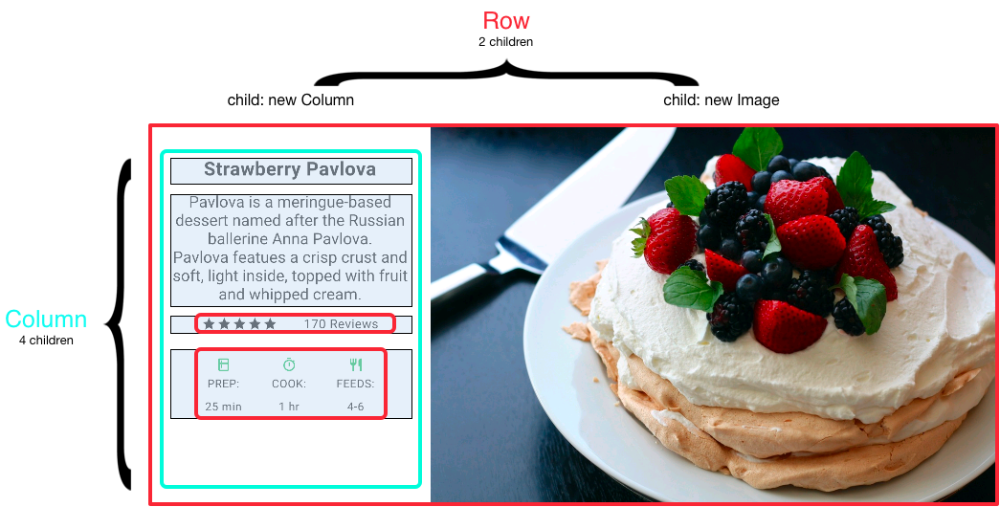
Sol sütunun widget ağacı satırları ve sütunları iç içe barındırır.
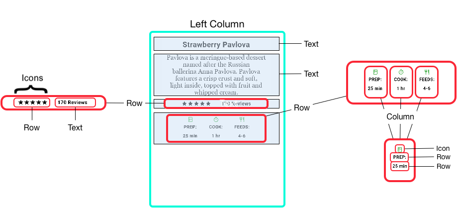
Pavlova’nın düzen kodunun bir kısmını “Satırları ve sütunları iç içe yerleştirme” bölümünde uygulayacaksınız.
Not Row ve Column, yatay
ve dikey düzenler için temel ilkel widget’lardır; bu düşük seviyeli
widget’lar maksimum özelleştirme sağlar. Flutter ayrıca ihtiyaçlarınız
için yeterli olabilecek özelleşmiş, daha yüksek seviyeli widget’lar da
sunar. Örneğin, Row yerine, baştaki ve sondaki simgeler ve
3 satıra kadar metin için özelliklere sahip kullanımı kolay bir widget
olan ListTile’ı tercih edebilirsiniz. Column
yerine, içeriği kullanılabilir alana sığmayacak kadar uzunsa otomatik
olarak kayan sütun benzeri bir düzen olan ListView’ı tercih
edebilirsiniz. Daha fazla bilgi için “Yaygın düzen widget’ları”na
bakın.
mainAxisAlignment ve crossAxisAlignment
özelliklerini kullanarak bir satır veya sütunun çocuklarını nasıl
hizalayacağını kontrol edersiniz. Bir satır için ana eksen (main axis)
yatay olarak çalışır ve çapraz eksen (cross axis) dikey olarak çalışır.
Bir sütun için ana eksen dikey olarak çalışır ve çapraz eksen yatay
olarak çalışır.
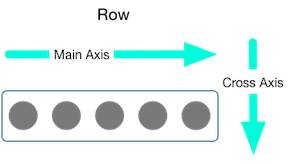
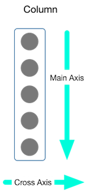
MainAxisAlignment ve CrossAxisAlignment
enum’ları, hizalamayı kontrol etmek için çeşitli sabitler sunar.
Not Projenize resim eklediğinizde, bunlara erişmek
için pubspec.yaml dosyasını güncellemeniz gerekir; bu örnek
resimleri görüntülemek için Image.asset kullanır. Daha
fazla bilgi için bu örneğin pubspec.yaml dosyasına veya
“Varlıklar ve resimler ekleme” konusuna bakın. Çevrimiçi resimlere
Image.network kullanarak başvuruyorsanız bunu yapmanıza
gerek yoktur.
Aşağıdaki örnekte, 3 resmin her biri 100 piksel genişliğindedir.
Render kutusu (bu durumda tüm ekran) 300 pikselden daha geniştir, bu
nedenle ana eksen hizalamasını spaceEvenly olarak
ayarlamak, boş yatay alanı her resmin arasına, önüne ve arkasına eşit
olarak böler.
Row(
mainAxisAlignment: MainAxisAlignment.spaceEvenly,
children: [
Image.asset('images/pic1.jpg'),
Image.asset('images/pic2.jpg'),
Image.asset('images/pic3.jpg'),
],
);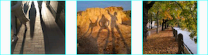
Uygulama kaynağı: row_column
Sütunlar satırlarla aynı şekilde çalışır. Aşağıdaki örnek, her biri
100 piksel yüksekliğinde olan 3 resimden oluşan bir sütunu
göstermektedir. Render kutusunun yüksekliği (bu durumda tüm ekran) 300
pikselden fazladır, bu nedenle ana eksen hizalamasını
spaceEvenly olarak ayarlamak, boş dikey alanı her resmin
arasına, üstüne ve altına eşit olarak böler.
Column(
mainAxisAlignment: MainAxisAlignment.spaceEvenly,
children: [
Image.asset('images/pic1.jpg'),
Image.asset('images/pic2.jpg'),
Image.asset('images/pic3.jpg'),
],
);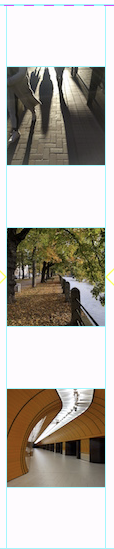
Uygulama kaynağı: row_column
Bir düzen bir cihaza sığmayacak kadar büyük olduğunda, etkilenen kenar boyunca sarı ve siyah çizgili bir desen görünür. İşte çok geniş bir satırın örneği:
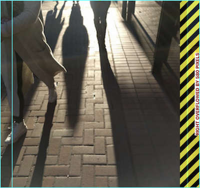
Widget’lar, Expanded
widget’ı kullanılarak bir satıra veya sütuna sığacak şekilde
boyutlandırılabilir. Resim satırının render kutusu için çok geniş olduğu
önceki örneği düzeltmek için, her resmi bir Expanded
widget’ı ile sarın.
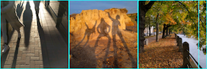
Row(
crossAxisAlignment: CrossAxisAlignment.center,
children: [
Expanded(child: Image.asset('images/pic1.jpg')),
Expanded(child: Image.asset('images/pic2.jpg')),
Expanded(child: Image.asset('images/pic3.jpg')),
],
);Uygulama kaynağı: sizing
Belki bir widget’ın kardeşlerinden iki kat daha fazla yer kaplamasını
istiyorsunuz. Bunun için, bir widget için esneme faktörünü belirleyen
bir tamsayı olan Expanded widget’ının flex
özelliğini kullanın. Varsayılan esneme faktörü 1’dir. Aşağıdaki kod,
ortadaki resmin esneme faktörünü 2 olarak ayarlar:
Row(
crossAxisAlignment: CrossAxisAlignment.center,
children: [
Expanded(child: Image.asset('images/pic1.jpg')),
Expanded(flex: 2, child: Image.asset('images/pic2.jpg')),
Expanded(child: Image.asset('images/pic3.jpg')),
],
);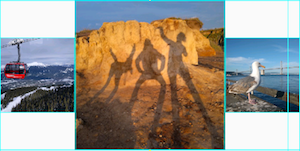
Uygulama kaynağı: sizing
Varsayılan olarak, bir satır veya sütun ana ekseni boyunca mümkün
olduğunca fazla yer kaplar, ancak çocukları birbirine yakın bir şekilde
sıkıştırmak istiyorsanız, mainAxisSize özelliğini
MainAxisSize.min olarak ayarlayın. Aşağıdaki örnek, yıldız
simgelerini bir arada toplamak için bu özelliği kullanır.
Row(
mainAxisSize: MainAxisSize.min,
children: [
Icon(Icons.star, color: Colors.green[500]),
Icon(Icons.star, color: Colors.green[500]),
Icon(Icons.star, color: Colors.green[500]),
const Icon(Icons.star, color: Colors.black),
const Icon(Icons.star, color: Colors.black),
],
)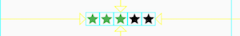
Uygulama kaynağı: pavlova
Düzen çerçevesi, satırları ve sütunları ihtiyaç duyduğunuz derinlikte satırlar ve sütunlar içine yerleştirmenize olanak tanır. Aşağıdaki düzenin ana hatları çizilmiş bölümünün koduna bakalım:
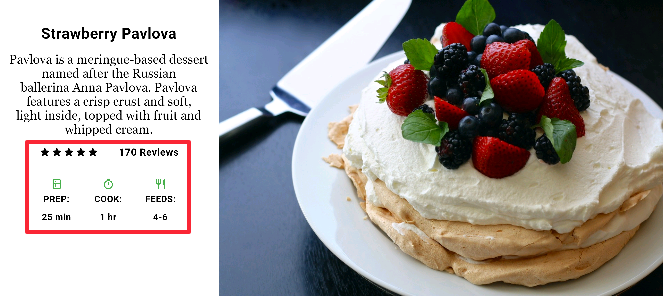
Ana hatları çizilen bölüm iki satır olarak uygulanmıştır. Derecelendirme (ratings) satırı beş yıldız ve inceleme sayısını içerir. Simgeler (icons) satırı üç sütun simge ve metin içerir.
Derecelendirme satırı için widget ağacı:
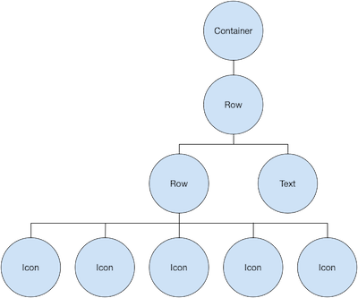
ratings değişkeni, 5 yıldız simgesinden oluşan daha
küçük bir satır ve metin içeren bir satır oluşturur:
final stars = Row(
mainAxisSize: MainAxisSize.min,
children: [
Icon(Icons.star, color: Colors.green[500]),
Icon(Icons.star, color: Colors.green[500]),
Icon(Icons.star, color: Colors.green[500]),
const Icon(Icons.star, color: Colors.black),
const Icon(Icons.star, color: Colors.black),
],
);
final ratings = Container(
padding: const EdgeInsets.all(20),
child: Row(
mainAxisAlignment: MainAxisAlignment.spaceEvenly,
children: [
stars,
const Text(
'170 Reviews',
style: TextStyle(
color: Colors.black,
fontWeight: FontWeight.w800,
fontFamily: 'Roboto',
letterSpacing: 0.5,
fontSize: 20,
),
),
],
),
);İpucu Yoğun şekilde iç içe geçmiş düzen kodunun neden olabileceği görsel karışıklığı en aza indirmek için, UI parçalarını değişkenler ve fonksiyonlar içinde uygulayın.
Derecelendirme satırının altındaki simgeler satırı 3 sütun içerir; her sütun bir simge ve iki satır metin içerir, widget ağacında görebileceğiniz gibi:
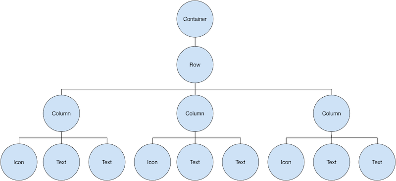
iconList değişkeni simgeler satırını tanımlar:
const descTextStyle = TextStyle(
color: Colors.black,
fontWeight: FontWeight.w800,
fontFamily: 'Roboto',
letterSpacing: 0.5,
fontSize: 18,
height: 2,
);
// DefaultTextStyle.merge() allows you to create a default text
// style that is inherited by its child and all subsequent children.
final iconList = DefaultTextStyle.merge(
style: descTextStyle,
child: Container(
padding: const EdgeInsets.all(20),
child: Row(
mainAxisAlignment: MainAxisAlignment.spaceEvenly,
children: [
Column(
children: [
Icon(Icons.kitchen, color: Colors.green[500]),
const Text('PREP:'),
const Text('25 min'),
],
),
Column(
children: [
Icon(Icons.timer, color: Colors.green[500]),
const Text('COOK:'),
const Text('1 hr'),
],
),
Column(
children: [
Icon(Icons.restaurant, color: Colors.green[500]),
const Text('FEEDS:'),
const Text('4-6'),
],
),
],
),
),
);leftColumn değişkeni derecelendirme ve simge
satırlarını, ayrıca Pavlova’yı açıklayan başlığı ve metni içerir:
final leftColumn = Container(
padding: const EdgeInsets.fromLTRB(20, 30, 20, 20),
child: Column(children: [titleText, subTitle, ratings, iconList]),
);Sol sütun, genişliğini kısıtlamak için bir SizedBox
içine yerleştirilir. Son olarak, UI, bir Card içindeki tüm
satır (sol sütunu ve resmi içeren) ile oluşturulur.
Pavlova resmi Pixabay’dan alınmıştır. Image.network()
kullanarak netten bir resim gömebilirsiniz ancak bu örnek için resim
projedeki bir images dizinine kaydedilmiş, pubspec
dosyasına eklenmiş ve Images.asset() kullanılarak
erişilmiştir. Daha fazla bilgi için “Varlıklar ve resimler ekleme”
konusuna bakın.
body: Center(
child: Container(
margin: const EdgeInsets.fromLTRB(0, 40, 0, 30),
height: 600,
child: Card(
child: Row(
crossAxisAlignment: CrossAxisAlignment.start,
children: [
SizedBox(width: 440, child: leftColumn),
mainImage,
],
),
),
),
),İpucu Pavlova örneği en iyi tablet gibi geniş bir cihazda yatay olarak çalışır. Bu örneği iOS simülatöründe çalıştırıyorsanız, Hardware > Device menüsünü kullanarak farklı bir cihaz seçebilirsiniz. Bu örnek için iPad Pro’yu öneririz. Yönünü Hardware > Rotate kullanarak yatay moda değiştirebilirsiniz. Ayrıca simülatör penceresinin boyutunu (mantıksal piksel sayısını değiştirmeden) Window > Scale kullanarak değiştirebilirsiniz.
Uygulama kaynağı: pavlova
Flutter zengin bir düzen widget kütüphanesine sahiptir. İşte en sık kullanılanlardan birkaçı. Amaç sizi tam bir listeyle bunaltmak yerine mümkün olduğunca çabuk işe koyulmanızı sağlamaktır. Diğer mevcut widget’lar hakkında bilgi için “Widget kataloğu”na bakın veya API referans belgelerindeki Arama kutusunu kullanın. Ayrıca, API belgelerindeki widget sayfaları genellikle ihtiyaçlarınıza daha uygun olabilecek benzer widget’lar hakkında önerilerde bulunur.
Aşağıdaki widget’lar iki kategoriye ayrılır: widget kütüphanesinden standart widget’lar ve Material kütüphanesinden özel widget’lar. Herhangi bir uygulama widget kütüphanesini kullanabilir ancak yalnızca Material uygulamaları Material Components kütüphanesini kullanabilir.
Birçok düzen, widget’ları dolgu kullanarak ayırmak veya kenarlıklar
veya kenar boşlukları eklemek için Container’ları bolca
kullanır. Tüm düzeni bir Container içine yerleştirerek ve
arka plan rengini veya resmini değiştirerek cihazın arka planını
değiştirebilirsiniz.
Özet (Container)
Row,
Column veya hatta bir widget ağacının kökü olabilir.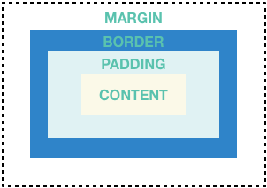
Örnekler (Container) Bu düzen, her biri 2 resim
içeren iki satıra sahip bir sütundan oluşur. Sütunun arka plan rengini
daha açık bir griye değiştirmek için bir Container
kullanılır.
Widget _buildImageColumn() {
return Container(
decoration: const BoxDecoration(color: Colors.black26),
child: Column(children: [_buildImageRow(1), _buildImageRow(3)]),
);
}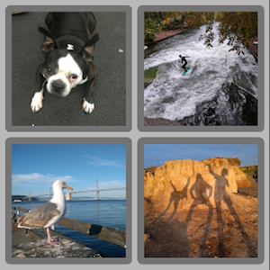
Her resme yuvarlatılmış bir kenarlık ve kenar boşlukları eklemek için
de bir Container kullanılır:
Widget _buildDecoratedImage(int imageIndex) => Expanded(
child: Container(
decoration: BoxDecoration(
border: Border.all(width: 10, color: Colors.black38),
borderRadius: const BorderRadius.all(Radius.circular(8)),
),
margin: const EdgeInsets.all(4),
child: Image.asset('images/pic$imageIndex.jpg'),
),
);
Widget _buildImageRow(int imageIndex) => Row(
children: [
_buildDecoratedImage(imageIndex),
_buildDecoratedImage(imageIndex + 1),
],
);Daha fazla Container örneğini eğitimde bulabilirsiniz.
Uygulama kaynağı: container
Widget’ları iki boyutlu bir liste olarak düzenlemek için
GridView kullanın. GridView önceden
hazırlanmış iki liste sağlar veya kendi özel ızgaranızı
oluşturabilirsiniz. Bir GridView içeriğinin render kutusuna
sığmayacak kadar uzun olduğunu algıladığında otomatik olarak kayar.
Özet (GridView)
GridView.count: Sütun sayısını belirtmenize olanak
tanır.GridView.extent: Bir döşemenin maksimum piksel
genişliğini belirtmenize olanak tanır.Not Bir hücrenin hangi satır ve sütunu işgal
ettiğinin önemli olduğu iki boyutlu bir liste görüntülerken (örneğin,
“avokado” satırı için “kalori” sütunundaki giriş), Table
veya DataTable kullanın.
Örnekler (GridView)
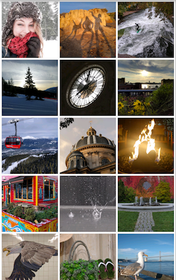
Maksimum 150 piksel genişliğinde döşemelere sahip bir ızgara
oluşturmak için GridView.extent kullanır. Uygulama kaynağı:
grid_and_list
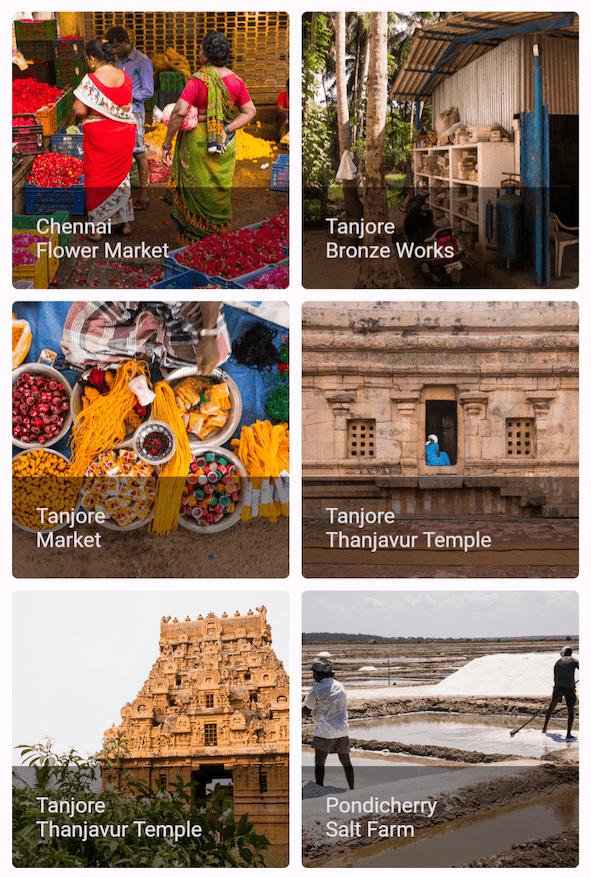
Portre modunda 2 döşeme genişliğinde ve manzara modunda 3 döşeme
genişliğinde bir ızgara oluşturmak için GridView.count
kullanır. Başlıklar, her GridTile için footer
özelliği ayarlanarak oluşturulur.
Dart kodu: grid_list_demo.dart
Widget _buildGrid() => GridView.extent(
maxCrossAxisExtent: 150,
padding: const EdgeInsets.all(4),
mainAxisSpacing: 4,
crossAxisSpacing: 4,
children: _buildGridTileList(30),
);
// The images are saved with names pic0.jpg, pic1.jpg...pic29.jpg.
// The List.generate() constructor allows an easy way to create
// a list when objects have a predictable naming pattern.
List<Widget> _buildGridTileList(int count) =>
List.generate(count, (i) => Image.asset('images/pic$i.jpg'));ListView, sütun benzeri bir widget’tır ve içeriği render
kutusu için çok uzun olduğunda otomatik olarak kaydırma sağlar.
Özet (ListView)
Column.Column’dan daha az yapılandırılabilir, ancak kullanımı
daha kolaydır ve kaydırmayı destekler.Örnekler (ListView) ListTiles
kullanarak bir işletme listesi görüntülemek için ListView
kullanır. Bir Divider, tiyatroları restoranlardan
ayırır.
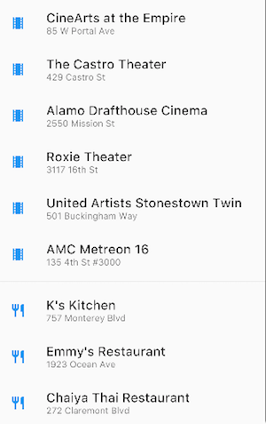
Uygulama kaynağı: grid_and_list
Belirli bir renk ailesi için Material 2 Tasarım paletindeki
Renkleri görüntülemek için ListView
kullanır.
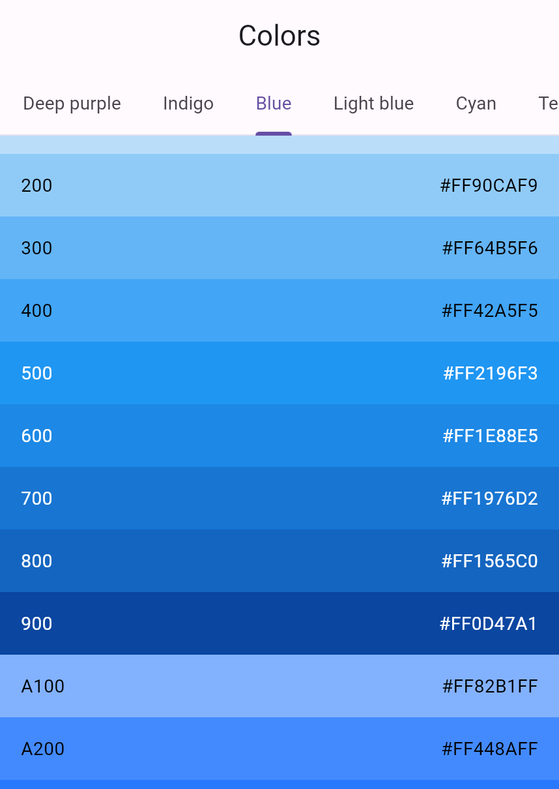
Dart kodu: colors_demo.dart
Widget _buildList() {
return ListView(
children: [
_tile('CineArts at the Empire', '85 W Portal Ave', Icons.theaters),
_tile('The Castro Theater', '429 Castro St', Icons.theaters),
_tile('Alamo Drafthouse Cinema', '2550 Mission St', Icons.theaters),
_tile('Roxie Theater', '3117 16th St', Icons.theaters),
_tile(
'United Artists Stonestown Twin',
'501 Buckingham Way',
Icons.theaters,
),
_tile('AMC Metreon 16', '135 4th St #3000', Icons.theaters),
const Divider(),
_tile('K\'s Kitchen', '757 Monterey Blvd', Icons.restaurant),
_tile('Emmy\'s Restaurant', '1923 Ocean Ave', Icons.restaurant),
_tile('Chaiya Thai Restaurant', '272 Claremont Blvd', Icons.restaurant),
_tile('La Ciccia', '291 30th St', Icons.restaurant),
],
);
}
ListTile _tile(String title, String subtitle, IconData icon) {
return ListTile(
title: Text(
title,
style: const TextStyle(fontWeight: FontWeight.w500, fontSize: 20),
),
subtitle: Text(subtitle),
leading: Icon(icon, color: Colors.blue[500]),
);
}Widget’ları bir temel widget’ın (genellikle bir resim) üzerine
düzenlemek için Stack kullanın. Widget’lar temel widget ile
tamamen veya kısmen örtüşebilir.
Özet (Stack)
Stack’in içeriği kaydırılamaz.Örnekler (Stack)
Bir CircleAvatar’ın üzerine (Text’ini yarı
saydam siyah bir arka planda görüntüleyen) bir Container
bindirmek için Stack kullanır. Stack, metni
alignment özelliği ve Alignments kullanarak
kaydırır.
Uygulama kaynağı: card_and_stack
Bir resmin üzerine bir simge bindirmek için Stack
kullanır.
Dart kodu: bottom_navigation_demo.dart
Widget _buildStack() {
return Stack(
alignment: const Alignment(0.6, 0.6),
children: [
const CircleAvatar(
backgroundImage: AssetImage('images/pic.jpg'),
radius: 100,
),
Container(
decoration: const BoxDecoration(color: Colors.black45),
child: const Text(
'Mia B',
style: TextStyle(
fontSize: 20,
fontWeight: FontWeight.bold,
color: Colors.white,
),
),
),
],
);
}Material kütüphanesinden bir Card, ilgili bilgi
parçacıklarını içerir ve neredeyse her widget’tan oluşturulabilir, ancak
genellikle ListTile ile birlikte kullanılır.
Card tek bir çocuğa sahiptir, ancak çocuğu bir sütun,
satır, liste, ızgara veya birden fazla çocuğu destekleyen diğer
widget’lar olabilir. Varsayılan olarak, bir Card boyutunu
0’a 0 piksele küçültür. Bir kartın boyutunu kısıtlamak için
SizedBox kullanabilirsiniz.
Flutter’da bir Card, hafifçe yuvarlatılmış köşelere ve
bir gölgeye sahiptir ve bu ona 3B efekti verir. Bir Card’ın
elevation özelliğini değiştirmek, gölge efektini kontrol
etmenizi sağlar. Örneğin, yüksekliği 24’e ayarlamak, Card’ı
görsel olarak yüzeyden daha yukarı kaldırır ve gölgenin daha dağılmasına
neden olur. Desteklenen yükseklik değerlerinin bir listesi için Material
yönergelerindeki Yükseklik (Elevation) bölümüne bakın. Desteklenmeyen
bir değer belirtmek gölgeyi tamamen devre dışı bırakır.
Özet (Card)
Row, Column veya başka bir widget
olabilir.Card’ın içeriği kaydırılamaz.Örnekler (Card) 3 ListTile içeren ve bir
SizedBox ile sarılarak boyutlandırılmış bir
Card. Bir Divider birinci ve ikinci
ListTiles’ı ayırır.
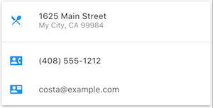
Uygulama kaynağı: card_and_stack
Bir resim ve metin içeren bir Card.
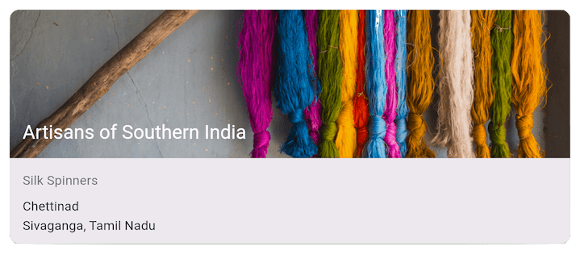
Dart kodu: cards_demo.dart
Widget _buildCard() {
return SizedBox(
height: 210,
child: Card(
child: Column(
children: [
ListTile(
title: const Text(
'1625 Main Street',
style: TextStyle(fontWeight: FontWeight.w500),
),
subtitle: const Text('My City, CA 99984'),
leading: Icon(Icons.restaurant_menu, color: Colors.blue[500]),
),
const Divider(),
ListTile(
title: const Text(
'(408) 555-1212',
style: TextStyle(fontWeight: FontWeight.w500),
),
leading: Icon(Icons.contact_phone, color: Colors.blue[500]),
),
ListTile(
title: const Text('costa@example.com'),
leading: Icon(Icons.contact_mail, color: Colors.blue[500]),
),
],
),
),
);
}3 satıra kadar metin ve isteğe bağlı baştaki ve sondaki simgeleri
içeren bir satır oluşturmanın kolay bir yolu için Material
kütüphanesinden özel bir satır widget’ı olan ListTile
kullanın. ListTile en yaygın olarak Card veya
ListView içinde kullanılır, ancak başka yerlerde de
kullanılabilir.
Özet (ListTile)
Row’dan daha az yapılandırılabilir, ancak kullanımı
daha kolaydır.Örnekler (ListTile) 3 ListTiles içeren
bir Card.
Uygulama kaynağı: card_and_stack
Öncü widget’larla ListTile kullanımı.
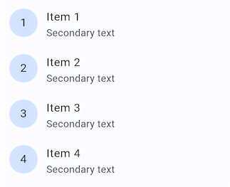
Dart kodu: list_demo.dart
Flutter’ın düzen sistemini tam olarak anlamak için, Flutter’ın bir düzendeki bileşenleri nasıl konumlandırdığını ve boyutlandırdığını öğrenmeniz gerekir. Daha fazla bilgi için “Kısıtlamaları Anlamak” (Understanding constraints) konusuna bakın.
“Flutter in Focus” serisinin bir parçası olan aşağıdaki videolar,
Stateless ve Stateful widget’ları açıklar.
[Flutter in Focus playlist placeholder]
“Widget of the Week” (Haftanın Widget’ı) serisinin her bölümü bir widget’a odaklanır. Bunların birçoğu düzen widget’larını içerir.
[Flutter Widget of the Week playlist placeholder]
Aşağıdaki kaynaklar düzen kodu yazarken yardımcı olabilir.
Bu doküman, Flutter resmi dokümantasyonundan türetilmiş Türkçe ders notudur.
Orijinal kaynak:
https://docs.flutter.dev/ui/layout
Türkçe çeviri ve düzenleme:
Doç. Dr. Hakan Temiz
Bu dokümandaki içerikler aşağıdaki açık lisanslar kapsamında sunulmaktadır:
Metin içerikleri (anlatım ve açıklamalar):
Flutter resmi dokümantasyonundan alınmış veya uyarlanmıştır.
Lisans: Creative Commons Attribution 4.0 International
(CC BY 4.0)
https://creativecommons.org/licenses/by/4.0/
Bu lisans kapsamında: - İçerik kopyalanabilir, dağıtılabilir ve
uyarlanabilir
- Ticari kullanım serbesttir
- Kaynak belirtilmesi zorunludur
Kod örnekleri:
Flutter resmi dokümantasyonundan alınmış veya uyarlanmıştır.
Lisans: BSD 3-Clause License
https://opensource.org/licenses/BSD-3-Clause
Bu lisans kapsamında: - Kodlar kopyalanabilir, değiştirilebilir ve
dağıtılabilir
- Ticari kullanım serbesttir
- Lisans bildiriminin korunması gerekir